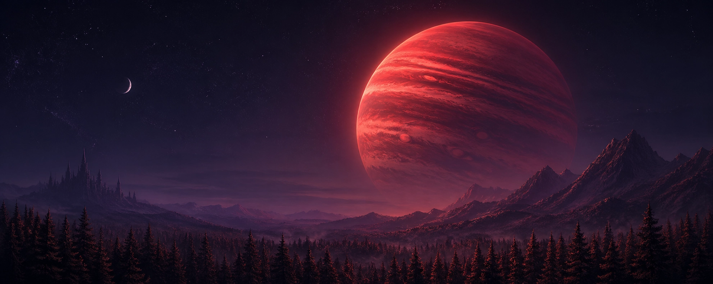
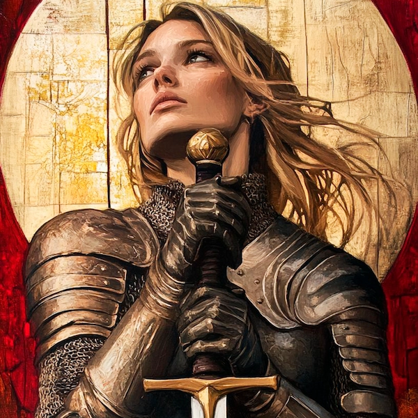
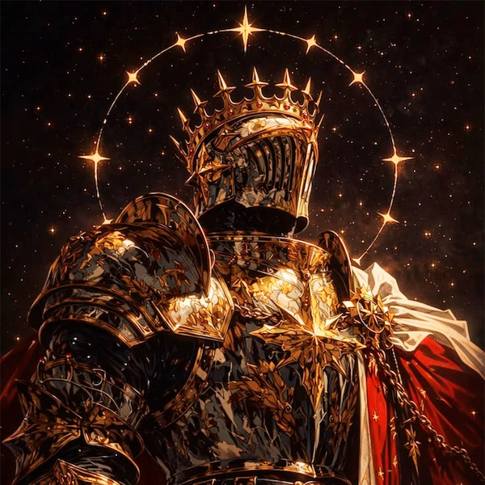
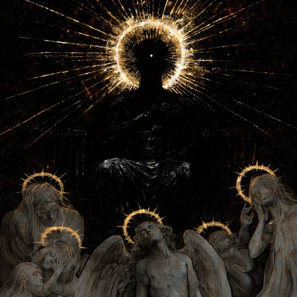
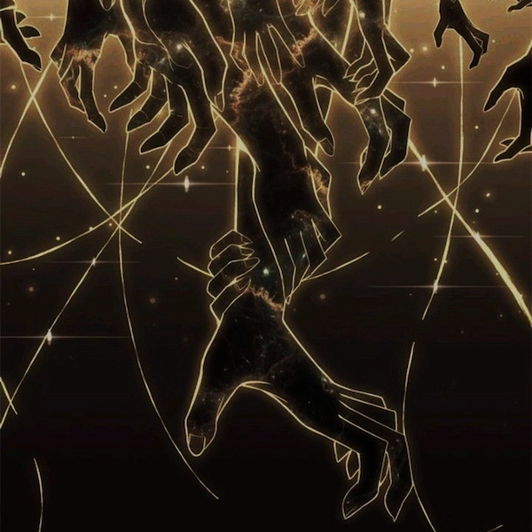
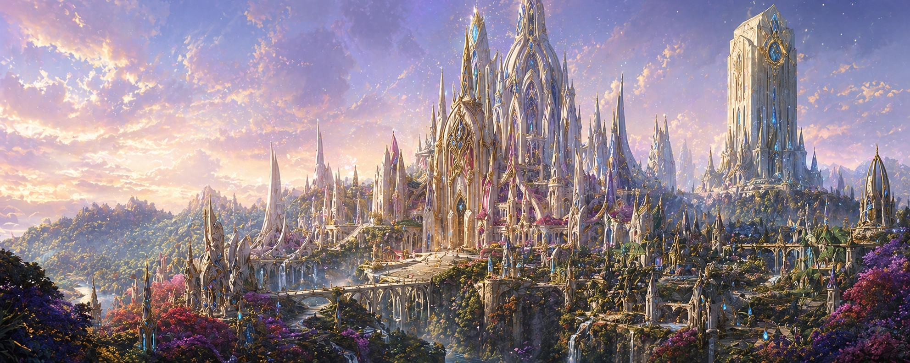
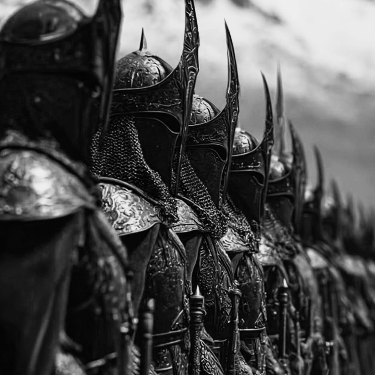
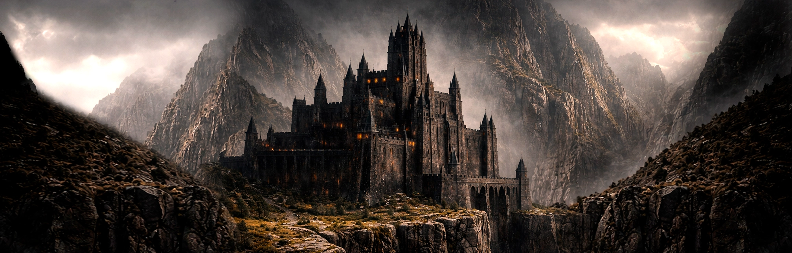
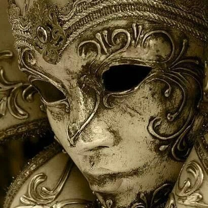

Os Escolhidos, no início da Grande Guerra, foram vistos não apenas como a elite mortal de Valthric - mas como uma bênção. O toque divino em nossa terra. Mas esses dias ficaram para trás...
A verdade é que aquilo que um dia nos vigiava por nós, tornou-se aquilo que nos vigia. O que antes protegia, agora observa. Um instrumento claro de coerção divina - uma tentativa patética de exercer domínio sobre nós, mortais
Um Escolhido não tem escolha. Quando escolhido, é sua obrigação servir a vontade divina.
Antes, um título disputado.
Hoje? Uma obrigação temida...


Klaus teria vergonha do que esse título se tornou - onde antes matar anjo era LEI, hoje não passa boato...
Promessas foram feitas.
Os anjos foram tomados como salvação. E por um tempo, todos acreditaram.
Não como um milagre - mas como o início de algo maior. Um mundo melhor sendo construído.
Mas não eram guardiões.
Eram os que carregavam as sementes.
E quando elas germinaram… por um instante, pareceu tarde demais.
O que se seguiu não foi uma batalha. Foi o momento em que as palavras deixaram de sustentar aquilo que prometiam.


Promessas impossíveis haviam se tornado fundamento da própria realidade. E quando isso cedeu… não havia como simplesmente voltar atrás.
Não se tratava mais de vencer.
Mas de impedir que tudo se desmoronasse.
Foi então que surgiram os Escolhidos. Não como bênção… mas como resposta.
Uma forma de conter aquilo que já não podia mais ser ignorado.
De manter de pé o que ainda restava.

Antigamente um reino que cuidava da trama - hoje, busca apenas poder através dela

O exército de Aelindor nunca foi formado por magos
Enquanto estes permanecem como uma elite distante… é a linha de frente que sustenta o reino
Foram eles, por gerações, os verdadeiros protetores de Aelindor
Não pela glória...
Mas pelo dever.
E agora o dever chama novamente
desta vez, contra algo que não deveria existir

O reino onde a máscara mostra sua verdadeira identidade

Em Astória, o trono mudou de mãos...
Mas não de forma silenciosa.
Desde então, decisões que antes afetavam apenas a corte agora ecoam além de suas muralhas.
Há quem diga que o novo rei governa com firmeza.
Outros… evitam dizer qualquer coisa.
E entre os Vermelhos...
há uma casa que já não responde como antes.
Essa mudança no trono não ficou contida em Astória.
Mesmo em Aelindor . .
seus efeitos já são sentidos.